Quem faz
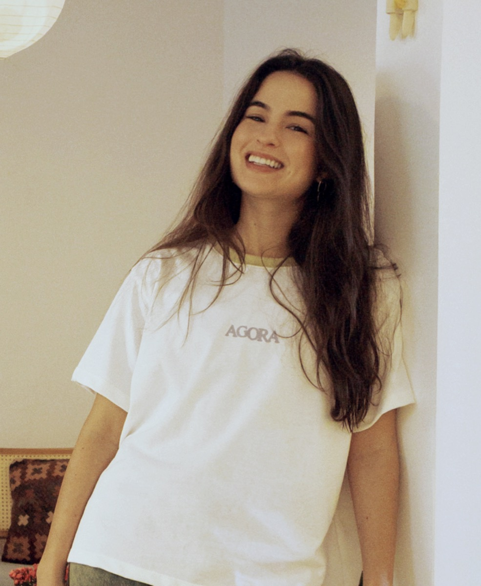
Sou Chloé, fundadora da Intu (@use.intu) e do Agora (@agora.intu). Há 7 anos empreendo, entre criação, produto, operação e estratégia. E hoje também estudo automação e inteligência artificial para aplicar tecnologia ao negócio.
Minha forma de trabalhar une criatividade e praticidade: gosto de pensar diferente, mas principalmente de transformar ideias em coisas que funcionam.
Ao longo dessa jornada, também me frustrei muitas vezes com fornecedores, confecções e consultorias que complicavam o que deveria ser simples ou entregavam respostas que não cabiam na realidade do negócio. Foi dessa falta que nasceu o Lab Intu: a consultoria que eu queria ter encontrado e que senti que precisava existir.
O Lab Intu existe para transformar ideias e complexidade em direção e estratégia em ação.
Você chega com a ideia. A gente estrutura o negócio e entrega o produto pronto.
Do nome à peça na prateleira
Marca, produto e produção na mesma equipe. Você acompanha e aprova cada etapa.
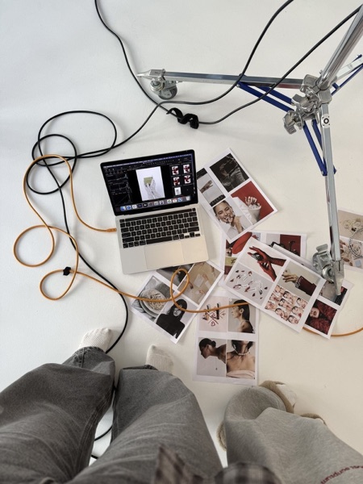
01Estratégia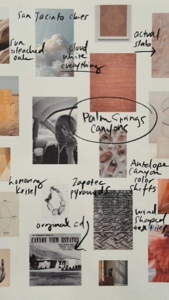
02Marca & posicionamento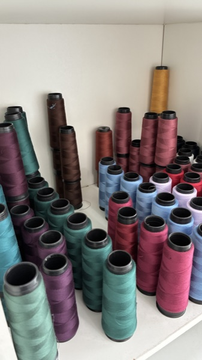
03Desenvolvimento de produto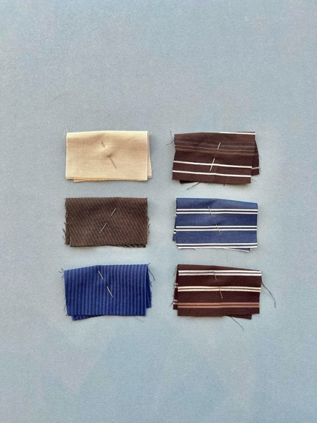
04Peça-piloto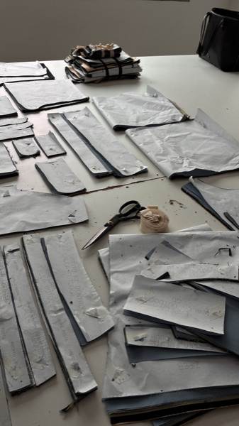
05Produção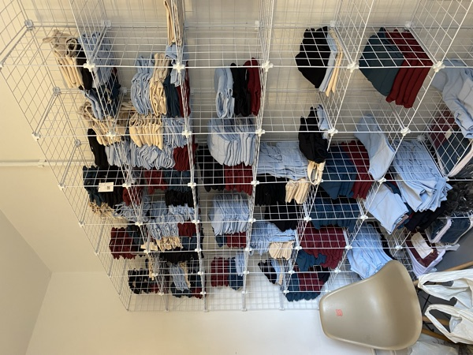
06EntregaComo prefere seguir:
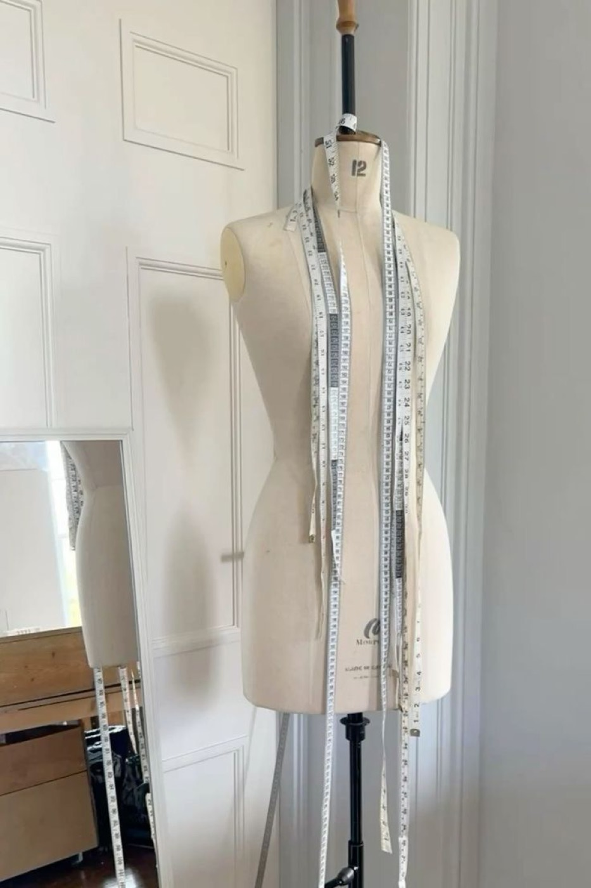
- Naming, identidade visual e posicionamento
- Desenvolvimento de produto e modelagem
- Ficha técnica e peça-piloto
- Produção no ateliê, em São Paulo
- Entrega e nota fiscal pra todo o Brasil
Talvez seja pra você se…
- tem uma ideia na cabeça mas não sabe por onde começar
- quer lançar do jeito certo, sem gambiarra
- não sabe como estruturar o negócio antes de vender
- precisa de marca, produto e produção andando juntos
- prefere ter alguém conduzindo o processo do início ao fim
Antes de resolver o produto, a gente escuta onde ele travou.
"A gente também está no mercado: já passou pelos altos e baixos."
Onde está a trava?
A gente olha Organizacional, Comunicação, Produto e Vendas, sempre ligados pelo olhar estratégico:
Dificuldade → Diagnóstico → Implementação
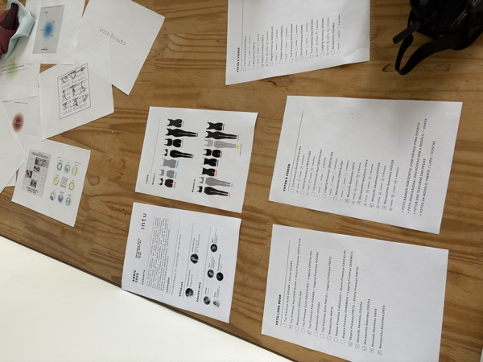
Organizacional
- Financeiro
- RH e contratações
- Aprendizado
- Delegação
- Fluxos e processos
- Automação e IA
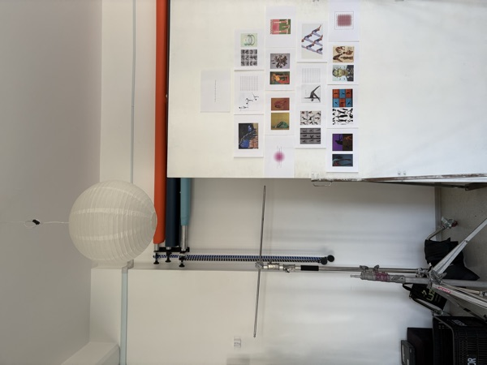
Comunicação
- Branding
- Posicionamento
- Brand book
- Comunicação B2C e B2B
- Processos internos
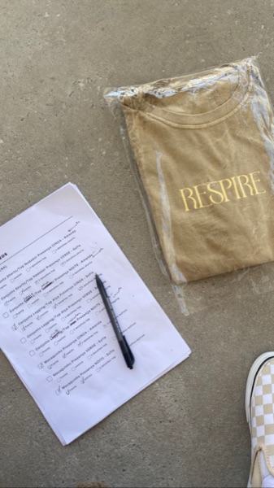
Produto
- Planejamento e cronograma
- Fechamento de coleção
- Validação
- Qualidade
- Produção e capacidade
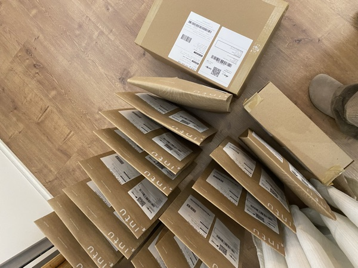
Vendas
- Pessoas
- Canais de venda
- Tração e estratégias
- Organização
- Estratégias comerciais
Hoje isso também passa por automação e inteligência artificial, sem perder o olhar humano por trás da decisão.
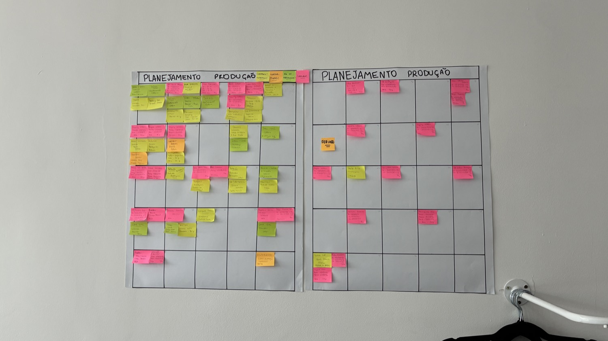
- Planejamento estratégico, financeiro, organizacional e 360
- Cronograma de lançamentos e ações comerciais
- Brand book: guia de marca e posicionamento
- Mapa de fluxos e processos
- Planilhas de controle: produto, preço, vendas
- Treinamentos: vendas, estilo, Excel, apresentações
Sempre personalizado conforme a necessidade, podendo virar um projeto 360º.
Encontro único ou pacote com acompanhamento contínuo. Valores sob consulta.
Como prefere seguir:
Talvez seja pra você se…
- quer crescer e não sabe como
- sente que está fazendo tudo sozinho
- não sabe qual é o próximo passo
- sente falta de um olhar de fora
- gosta de trocar e aprender com quem já passou por isso
Escolha o formato:
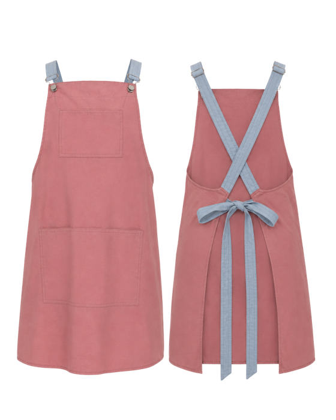
Avental bicolorvárias cores disponíveisOrçar →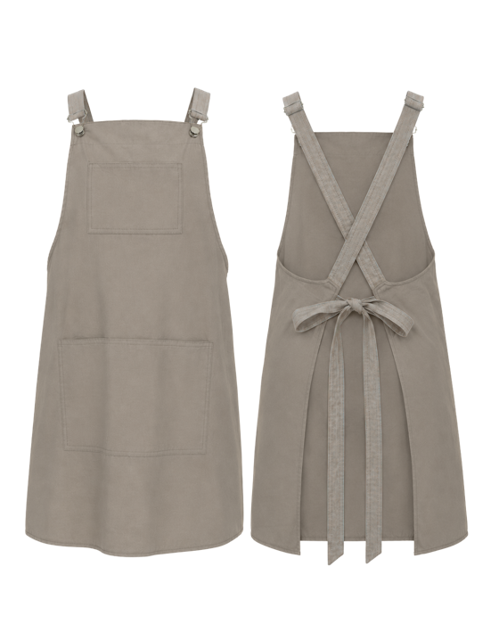
Avental cor únicavárias cores disponíveisOrçar →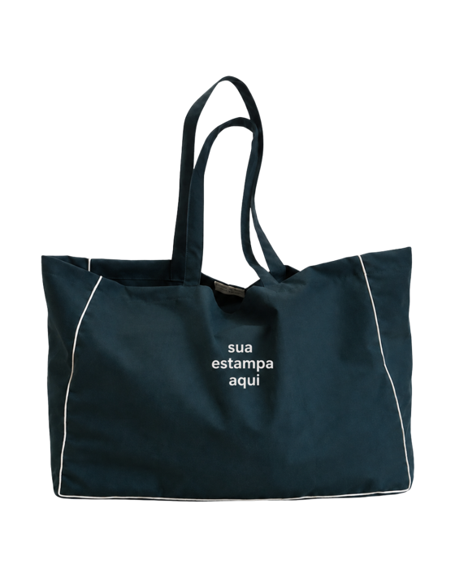
Bolsa lisacores disponíveisOrçar →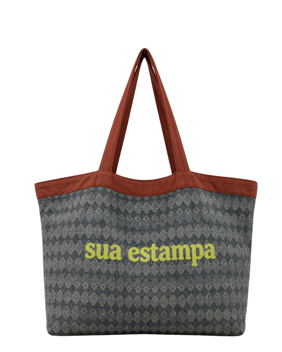
Bolsa estampadaestampas disponíveisOrçar →
Camiseta básicacores disponíveisOrçar →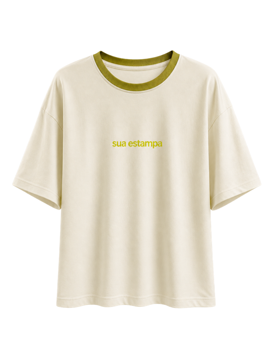
Camiseta duas corescores disponíveisOrçar →Cores e estampas sob consulta.
Da ideia à peça
Quatro etapas, uma equipe só, do desenvolvimento à entrega.
Produção
Passo a passo
Briefing, aprovação, produção: o fluxo por trás de cada peça.
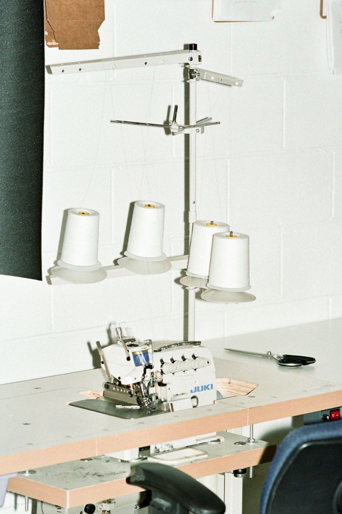
- Briefing: produto, modelo, quantidade, grade, tecido
- Modelagem & piloto: ficha técnica e primeira peça
- Aprovação: ajuste e ok formal antes de produzir
- Produção: corte, costura, acabamento, qualidade
- Entrega: nota fiscal e envio pra todo o Brasil
Talvez seja pra você se…
- já tem o produto definido e só precisa produzir
- quer trocar de fornecedor porque o atual não entrega qualidade
- não quer ficar no escuro sobre prazo e processo
- tem um modelo pronto e precisa de consistência na produção
- quer produtos personalizados pra própria marca
A gente entende o negócio
e faz o produto acontecer.
O Lab Intu junta três coisas que costumam viver separadas: olhar estratégico, desenvolvimento de produto e produção.
Dá pra contratar juntas ou separadas. Sempre do jeito prático e direto de quem também está no mercado.
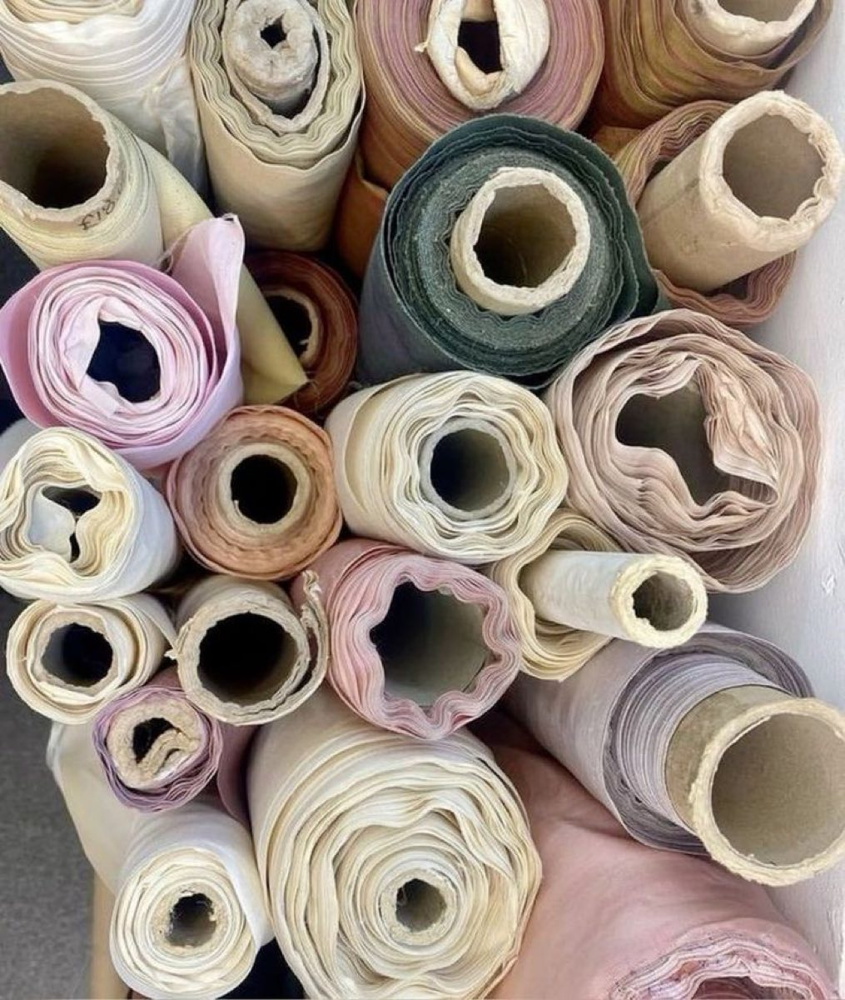
Quem já passou por aqui
Marcas que já produziram ou fizeram consultoria com a gente, contando como foi.
O atendimento foi de longe o que mais me surpreendeu no processo inteiro. Sempre que eu mandava alguma dúvida, a resposta vinha rápido, com conselhos que fizeram muita diferença no desenvolvimento da minha marca.
Queria testar possibilidades bem específicas que os fornecedores terceiros não conseguiam atender — a Paula foi atrás de outros fornecedores até chegar no resultado ideal.
Participei de mentorias com a Chloé e a experiência foi excelente! Ela esteve sempre disponível, trazendo novas ideias e ajudando a olhar pra pontos que a gente acaba não percebendo.
Me ajudou a ter mais clareza nas decisões pra continuar evoluindo a marca. Recomendo muito!
A Intu faz parte da realização do meu sonho — uma empresa ágil, que trabalha com extrema qualidade e competência. Por isso a escolhi pra fazer os uniformes da minha empresa.
As camisetas e os aventais ficaram maravilhosos! E assim crescemos juntos, todos trabalhando com amor e comprometimento.
A confecção ficou muito boa e o pessoal gostou bastante, principalmente da qualidade do tecido. A camiseta teve ótima recepção — já estão pedindo outras peças, como a camiseta preta da escola.